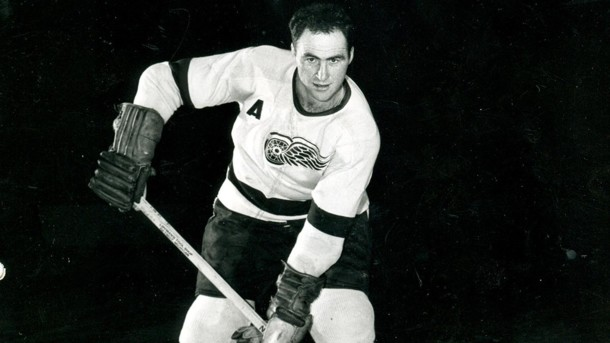

Помер восьмикратний володар Кубка Стенлі

Ред Келлі вигравав по чотири трофеї в складі "Детройта" і "Торонто"
На 92-му році життя помер восьмикратний володар Кубка Стенлі Ред Келлі. Про це повідомляється на сторінці "Детройт Ред Вінгс", з яким Келлі чотири рази завойовував головний трофей (1950, 1952, 1954, 1955). Ще чотири Кубки Стенлі, рекордсмен за кількістю титулів серед хокеїстів, виграв у складі "Торонто" (1962, 1963, 1964, 1967).
Всього в НХЛ Келлі провів 1316 матчів і набрав 823 очки (281+542). 1954 року був визнаний найкращим гравцем оборони, а пізніше виступав на позиції нападника.
Після закінчення кар'єри "Детройт" і "Торонто" вивели 4-й номер, під яким грав Келлі, з обігу.